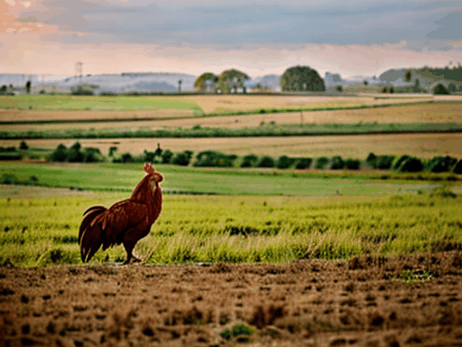

La función Generar Video en AiCasso te permite crear videos simplemente describiendo lo que quieres ver. ¡Solo escribe tu idea y AiCasso la hará realidad en un video!
Cómo Funciona:
Prompt:
"Un gallo animado en 3D en un campo solo, comiendo y siendo feliz. Hazlo un video en retrato con 50 pasos de desruido."
Resultado:
Prompt:
"Un dibujo animado de un gallo en un campo en dimensiones de paisaje."
Resultado:
Prompt:
"Un gallo en un campo."
Resultado:
Prompt:
"Un gallo que está en el campo solo. Dale una sensación natural."
Resultado:

Opciones Adicionales
¿Quieres ajustar tu video? Aquí hay algunas configuraciones con las que puedes experimentar:
Número de Fotogramas: Elige cuántos fotogramas (imágenes individuales) tendrá tu video. Puedes llegar hasta 25 fotogramas, siendo 16 el valor predeterminado.
Número de Pasos de Desruido: Esto controla cuán suave se ve tu video. Más pasos significan videos más suaves. Puedes establecer hasta 50 pasos, siendo 20 el valor predeterminado.
Escala de Guía: Esto ayuda a que el video se adhiera estrechamente a tu descripción. Cuanto mayor sea el número, más seguirá tu prompt. El rango es de 0 a 8, siendo 8 el valor predeterminado.
Omitir Clips: Omite ciertas capas para un estilo de video diferente. Por defecto, no se omiten capas, pero puedes omitir hasta 2.
Aumentar Ancho y Alto: Puedes hacer que tu video sea más grande ajustando la resolución. El valor predeterminado es 1024x1024 píxeles, pero puedes modificarlo según tus necesidades.
Fuerza de Aumento: Esto cambia cuánto se ajusta tu video al aumentar su tamaño. El valor predeterminado es 1, pero puedes ajustarlo para ver más diferencias.
Escala de Guía de Aumento: Esto guía el proceso de aumento, con un rango de 0 a 8, y un valor predeterminado de 8.
Pasos de Inferencia de Aumento: El número de pasos tomados para aumentar el video. Más pasos hacen que el aumento sea más suave, con un máximo de 50 y un valor predeterminado de 20.
Muestreo Mejorado: ¿Quieres un video más refinado? Activa esto. Está desactivado por defecto.
Semilla de Muestreo Mejorado: Usa esto para generar el mismo video cada vez con muestreo mejorado. Es opcional y está desactivado por defecto.
Fotogramas por Segundo (FPS): Establece la velocidad de tu video. El valor predeterminado es 16 FPS, pero puedes ajustarlo hasta 16.
Modelo de Video: Elige el estilo de tu video. Las opciones incluyen:
Predeterminado: Un modelo de video estándar.
Dibujo Animado: Un estilo de video caricaturesco.
Natural: Un estilo de video realista y natural.
Animado en 3D: Un estilo de video animado en 3D.
Recuerda, estas configuraciones son opcionales. La función Generar Video funciona muy bien con solo una descripción simple, ¡así que siéntete libre de experimentar y ver qué puedes crear!